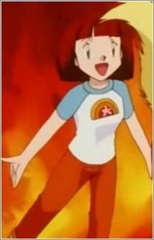

|
Bonnie |
|
Bonnie is an aspiring Pokemon Trainer. She is the younger sister of Clemont. Bonnie is a young and cheerful girl who is always excited to meet new Pokemon. She praises her brother for his accomplishment as an inventor but criticizes him if his inventions do not work. Bonnie tries to find a wife for Clemont. |
| |
Cherry |
|
Cherry is Psychic Pokemon Trainer with a Girafarig who lives in Len Town. She is determined to pursue her dream to be a Psychic Pokemon Master. |
| |
Jirachi |
- Pokemon Black and White: Decolora Adventure
|
Jirachi is a mythical Pokemon from the Hoenn region. Jirachi hibernates for extensive periods, forming a protective crystalline as it sleeps. It awaken for seven days every thousand years, but can also waken if sung to by a voice of purity. Jirachi is said to grant wishes. |
|  |
Koume |
|
Koume is the fourth oldest sister of Kimono Sisters. She is more withdrawn and shy compare to her other sisters. She, like her sister, are sincere and kind. |
| |
Mika |
|
Mika is a little girl who lives in Megi City with her older sister, Andrea, and their father. Her family business is making jewelry from Corsola horns. Her family lives on top of a Corsola colony. |
| |
Mimete |
|
Mimete is the second of Witches 5. Mimete is a bit of a ditz. Out of all the witches, she is the leasted and the most easily distracted. |
 |
Momon |
- Fairy Tail: Houou no Miko Prologue
- Fairy Tail the Movie: Phoenix Priestess
|
Momon is Elclair's stuffed toy companion. He is extremely loyal to Eclair. He tries to encourage her to be nicer to others and apologizes to others for her. |
 |
Bayleef |
- Pokemon
- Pokemon: Pikachu's Pikaboo
- Pokemon Chronicles
- Pokemon Advanced Generations
- Pokemon Diamond and Pearl
|
Bayleef is a Pokemon from the Johto region. It evolves from the grass starter, Chikorita. Bayleef's fragrance has a combination of energizing, stimulating, and healing effects. Mika Kanai voiced Ash's Bayleef. |
 |
Chikorita |
- Pokemon
- Pokemon: Pikachu and Pichu
- Pokemon: Pikachu's Winter Vacation 2000
|
Chikorita is a Pokemon from the Johto region. Chikorita is a grass starter for Johto. Chikorita uses its leaf to determine the temperature and humidity of the surrounding air. Mika Kanai voiced Ash's Chikorita. |
 |
Eevee |
- Pokemon
- Pokemon XY
- Pokemon XYZ
|
Eevee is a Pokemon from Kanto region. Eevee is a quadruped creature with primarily brown fur. Eevee has an irregularly shaped genetic structure that allows it to adapt to many different kinds of environments. Mika Kanai voiced Serena's and Gray's Eevee. |
| |
Emolga |
- Pokemon Black and White
- Pokemon Movie 14: White - Victini and Zekrom
- Pokemon Movie 14: Black - Victini and Reshiram
- Pokemon Movie 15: Kyurem vs. The Sword of Justice
- Pokemon Black and White: Rival Destinies
- Pokemon Black and White: Adventure in Unova
- Pokemon Black and White: Decolora Adventure
- Pokemon Movie 16: Genesect and The Legend Awakened
|
Emolga is a Pokemon from the Unova region. Emolga lives in treetops and uses it glide from tree to tree. It can generate electricity in its cheeks. It capable to gather lots of food. Mika Kanai voiced Iris' Emolga. |
 |
Espeon |
- Pokemon Movies 5: Heros - Latios and Latias
|
Espeon is a Pokemon from Johto region. Espeon is one of the Eevee evolve forms. The gem on Espeon's head boosts it's psychic powers to protects it's trainers. Mika Kanai voices Annie's Espeon. |
 |
Jigglypuff |
- Pokemon
- Pokemon Advanced Generations
- Pokemon Sun and Moon
|
Jigglypuff is a Pokemon from the kanto region. Jigglypuff is evolve form of Igglybuff. It's eye are mesmerize opponents and will inflate it lungs. It able to sing lullaby and makes people fall asleep. |
 |
Marill |
- Pokemon
- Pokemon Chronicles
- Pokemon Advanced Generations
- Pokemon Diamond and Pearl
|
Marill is a Pokemon from the Johto region. Marill is the evolved of Azurill. Marill can swim in strong water currents being slowed down due to it's water repellent fur. Mika Kanai voiced Tracey's, Wihomena's, Trixie's, Pietra's, Lola's, Vivi's and Lulu's Marill. |
 |
Pikachu |
|
Pikachu is the main Pokemon in all of Pokemon. Pikachu is from the Kanto region and the evolved form of Pichu. Pikachu can recharge each other with their build up energy. |
 |
Sylveon |
- Pokemon XYZ
- Pokemon Movie 19: Volcanion and The Mechanical Marvel
|
Sylveon is a Pokemon from the Kalos region. Sylveon is an evolved of Eevee. Its ribbons to distract cautious prey before it attacks. Mika Kanai voiced Serena's Sylveon. |
 |
Umbreon |
|
Umbreon is a Pokemon from the Johto region. Umbreon is an evolved form of Eevee. When it gets agitated, it can release a poisonous sweat. Mika Kanai voiced Gray's Umbreon. |